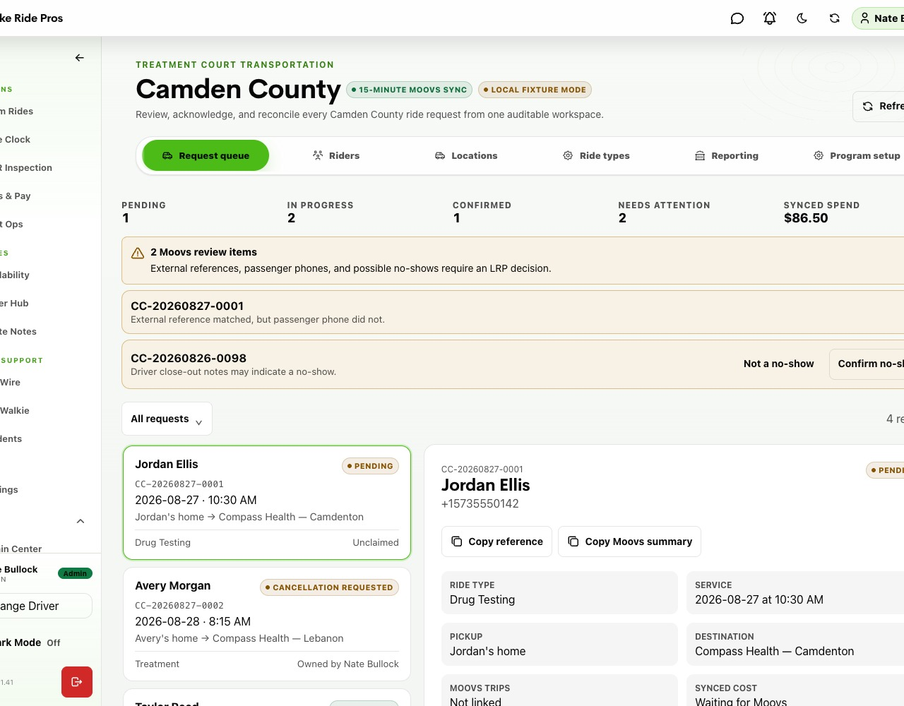
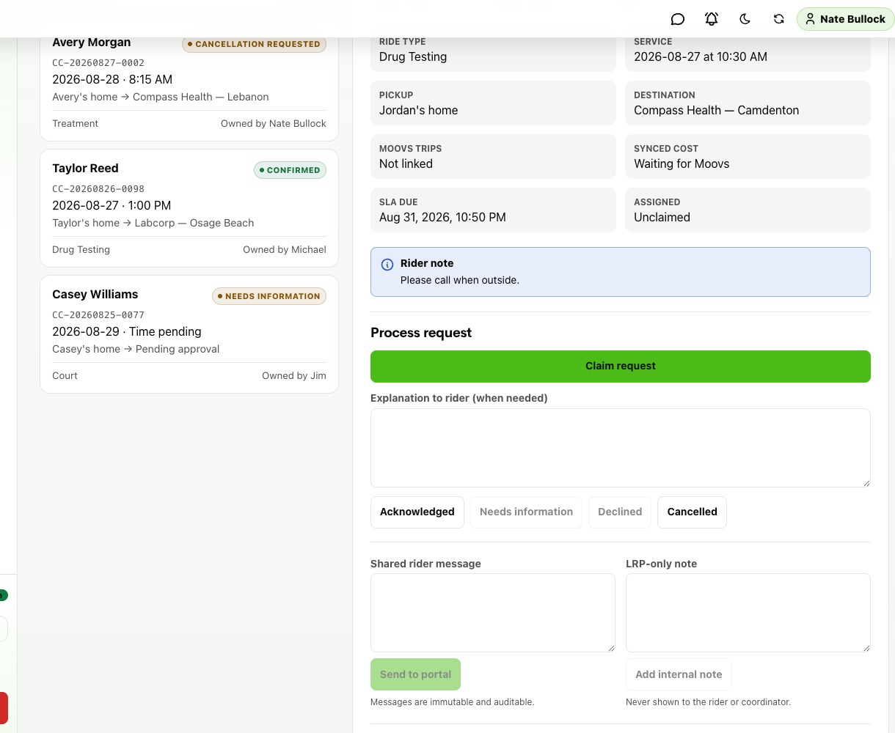
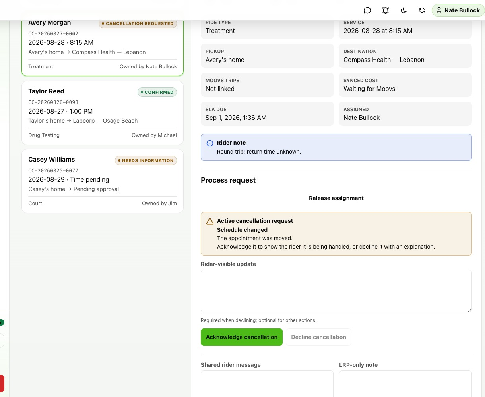
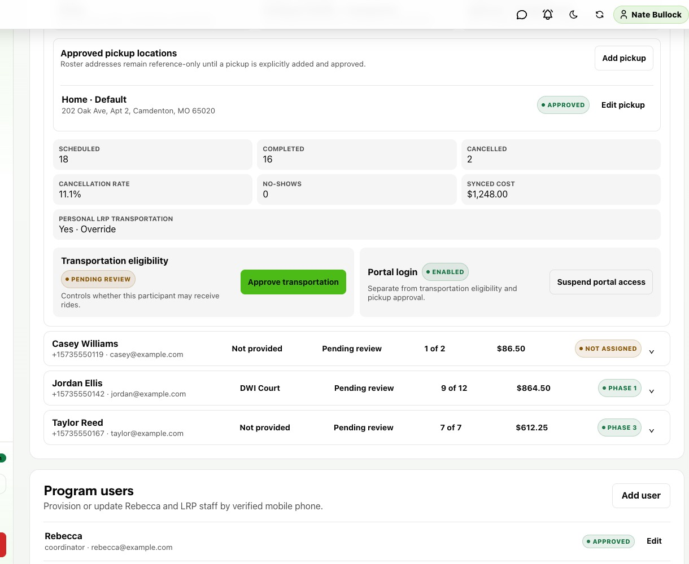
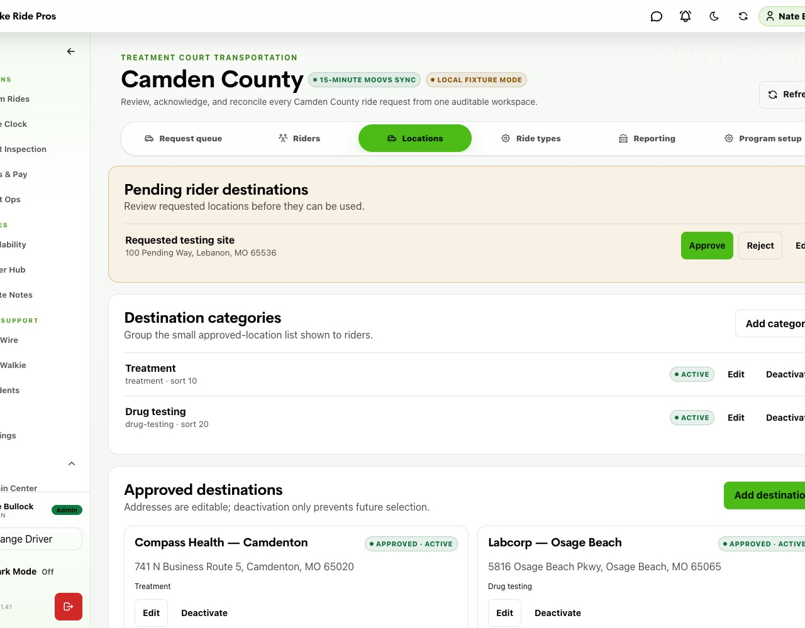
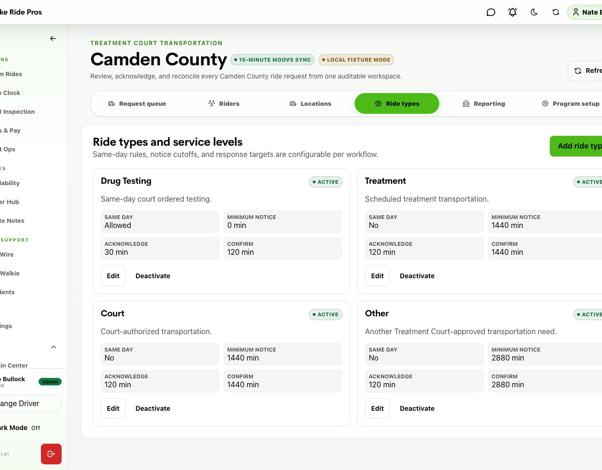
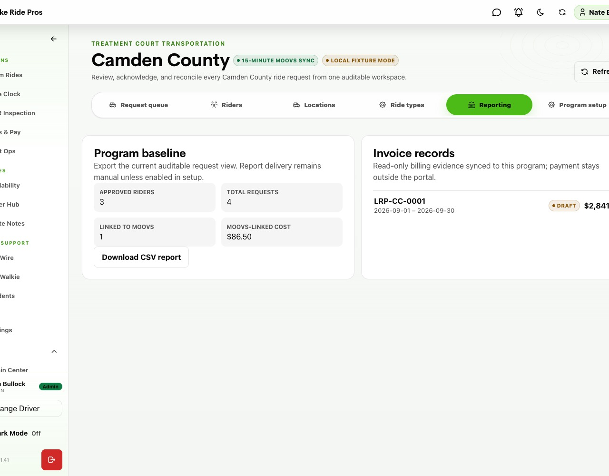
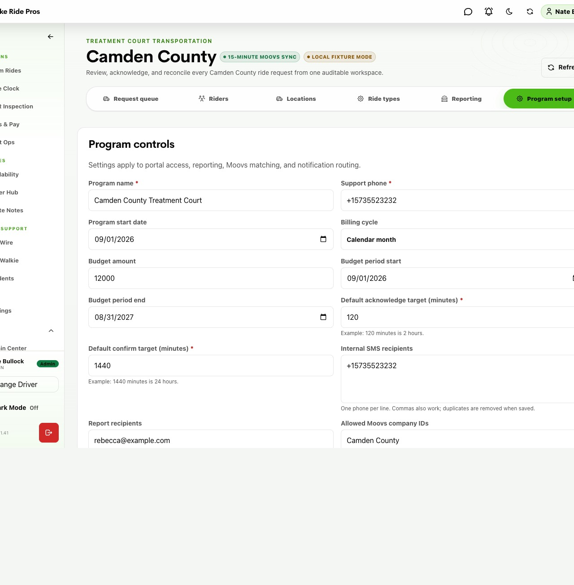

1
Scan the alerts
Resolve missing references, duplicate matches, phone mismatches, and likely no-shows before they age.

LRP Driver Portal Staff Workflow
The complete staff-side process for managing portal requests, entering the right identifiers in Moovs, confirming rides, handling follow-ups, and keeping participant access ready.
Open the staff workspaceLRP Driver Portal → Camden County
Updated
August 2026
Lake Ride ProsUse the Camden County workspace as the control center. Start with work requiring attention—not with the oldest item you happen to see.

1 2 3Sample local fixture data. Live records contain confidential participant and program information.
Resolve missing references, duplicate matches, phone mismatches, and likely no-shows before they age.
Prioritize Needs information, Pending near target, and active change or cancellation requests.
Review the participant, phone, timing, route, notes, messages, and timeline before acting.
Daily order: reconciliation issues → needs-attention work → pending requests near review target → acknowledged requests awaiting Moovs scheduling → follow-up actions → no-shows.
 Lake Ride Pros
Lake Ride ProsRequests begin unclaimed. Claim the record before working it so another staff member can see who owns the next step.

1 2 3The available controls change with the request status and the action currently in progress.
Confirm the assignment shows you before making a status change.
Participant, verified phone, date, pickup/arrival timing, approved pickup, destination, companion, and notes.
Use Acknowledged when valid and ready for Moovs entry; Needs information when something is missing.
Declined requires a clear rider-visible reason. Cancelled is for a request that will not proceed.
There is no “Approve request” button. For a valid ride request, Acknowledged means “LRP reviewed it and is working on scheduling.” It is not a ride confirmation. Approve transportation is a separate participant eligibility control.
Lake Ride ProsThe exact request reference and the participant's verified phone are the two keys that let LRP Driver Portal find the Moovs trip and confirm the portal request.
CC-20260827-0001
Select Copy reference.
External Reference Number
Paste the exact reference—no extra words.
| From LRP Driver Portal | Where it goes in Moovs | Rule |
|---|---|---|
| Request reference | Reservation → External Reference Number | Paste the exact CC-… value. Never leave it only in trip notes. |
| Participant + verified phone | Passenger on the reservation + Passenger Phone Number | Select/create the correct passenger. The phone must match the verified portal phone. |
| Service date and timing | Reservation date, pickup time, and/or arrival timing | Use the request details to schedule the operationally correct pickup. |
| Approved pickup + destination | Pickup and drop-off locations | Use the approved/requested route. Resolve any destination review first. |
| Companion + rider notes | Appropriate reservation notes, only if operationally needed | Carry only information the driver/dispatch team needs. |
| Copy Moovs summary | Working checklist while building the reservation | Helpful for entry; it does not replace External Reference Number. |
| Moovs Full Confirmation / trip ID | Nowhere to paste in LRP Driver Portal | The sync captures the stable Moovs ID automatically. |
Copy Moovs summary example:
CC-20260827-0001
Jordan Ellis · +15735550142
2026-08-27 at 10:30 AM
Jordan's home → Compass Health — Camdenton
Do not mix up IDs. Allowed Moovs company IDs and booking contact IDs belong in Program setup and control which Moovs records the integration can discover. They are not per-request reference numbers and should not be changed casually.
Lake Ride ProsLRP Driver Portal checks Moovs on a 15-minute cadence. A pending request confirms automatically only when it finds one in-scope Moovs trip with both the exact reference and verified passenger phone.
Use the reconciliation cards and request detail to investigate records that did not link cleanly.
Add the exact request reference to the Moovs External Reference Number field, then allow sync to retry.
Verify the Moovs passenger is the participant and correct the passenger phone. Never force a match by guessing.
Review every Moovs trip carrying the reference. Round trips can be valid; unintended duplicates must be corrected.
Moovs remains the pricing and operational source of truth. Multiple trip rows may link to one round-trip request.
Likely no-show: review the trip evidence, then choose Not a no-show or Confirm no-show. Add a concise audit note when context will help the next reviewer.
Lake Ride ProsParticipant actions remain attached to the original request. LRP Driver Portal records the conversation and audit trail; the actual operational change still happens in Moovs.

1 2 3Sample fixture data. The rider-visible update and internal note serve different audiences.
Read the participant's reason, timing, current Moovs trip, and action deadlines.
Tell the participant it is being handled; do not imply the Moovs change is complete yet.
Change or cancel the operational reservation and verify the result in Moovs.
Record the participant-facing outcome and any necessary internal audit context.
Shared rider message
Visible to the participant and coordinator. Write clearly, professionally, and with no internal-only detail.
LRP-only note
Never shown to the participant/coordinator. Use for concise operational or audit context.
Messages and internal notes are immutable after submission. Review before saving. Portal v1 does not write changes or cancellations into Moovs automatically.
Lake Ride ProsTransportation eligibility, portal login, and approved pickups are independent. Enabling one does not automatically enable the others.

1 2 3A new participant starts pending, without a portal identity, and without an approved pickup.
Approve transportation only after program authorization. Suspend/resume separately when eligibility changes.
Add, approve, edit, and select a default pickup. The roster/source home address is reference-only—not automatically approved.
Enable access only when the participant is ready. Suspend/reactivate login without changing transportation eligibility.
Common trap: portal access alone does not make someone ride-ready. Without transportation approval and an approved pickup, the participant still cannot submit a valid request.
Lake Ride ProsThese settings control which routes participants can request and when the portal allows a request, change, or cancellation.


Left: destination review and catalog. Right: ride-type policy and service targets. Sample fixture data.
Configuration changes have program-wide impact. Confirm any policy or location change with the program owner before editing. Preserve the reason for material changes in the appropriate operational record.
Lake Ride ProsUse Reporting for evidence and exports. Use Program setup only for authorized administrative changes—not routine request processing.


Sample fixture data. Never share screenshots or exports outside approved program channels.
High-risk area: a wrong allowed company ID or booking contact ID can hide valid trips or pull the wrong records into reconciliation. Do not experiment. If uncertain, stop and verify with the program owner or integration administrator.
Lake Ride ProsUse this sequence every time. The goal is a clean participant experience, a correct Moovs reservation, and an auditable LRP Driver Portal record.
Confirm ownership before touching status or messages.
Eligibility, verified phone, approved pickup, destination, ride type, and timing.
Route, appointment/arrival time, companion, notes, conversation, and active actions.
Acknowledge valid work. Use Needs information or Declined with a clear rider-visible explanation.
Paste the exact CC-… into Moovs External Reference Number.
Correct participant and phone, schedule, route, notes, company, and booking contact.
Do not manually claim confirmation. Confirmed follows a clean reference + phone match.
Missing reference, phone mismatch, duplicates, or out-of-scope company/contact.
Acknowledge in LRP Driver Portal, change/cancel in Moovs, then complete the portal action.
Verify participant-facing status, record concise audit context, and clear the queue item.
The one-line rule: CC request reference goes in Moovs External Reference Number; the verified participant mobile goes on the Moovs passenger. When both match, sync does the rest.
LRP Driver Portal → Camden County
Request queue · Riders · Locations · Ride types · Reporting · Program setup
Questions?
Escalate uncertain matches or configuration changes before acting.